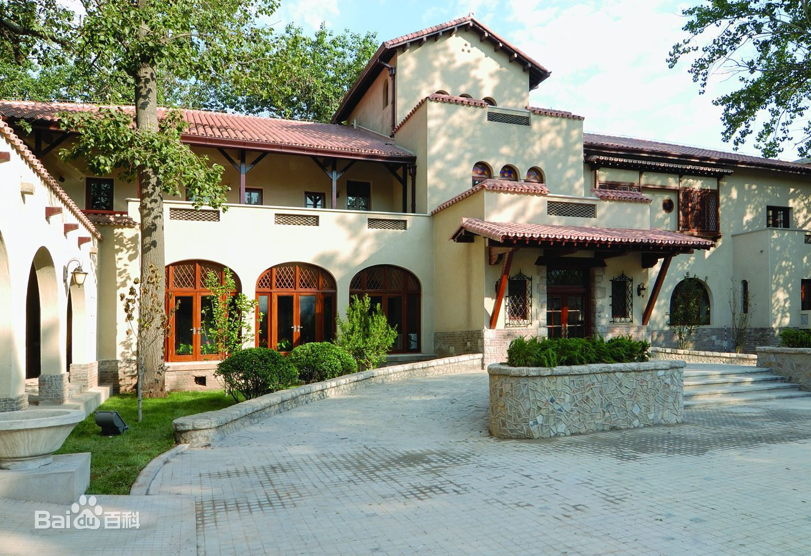
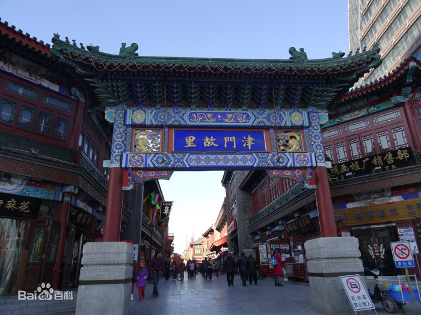

7月2日
目录
景点
-
静园
路线
- 地铁3号线 天津站 => 营口道 (3站) 换乘 地铁1号线
- 地铁1号线 营口道 => 鞍山道 (1站)
- 步行 地铁鞍山道站 => 静园 (约415米)
-
简介
静园，位于中国天津市和平区鞍山道70号（原日租界宫岛街），建于1921年，占地面积约3016平米，建筑面积约1900平米，为天津市特殊保护级别的历史风貌建筑、天津市文物保护单位。
-
图片
静园天津市·河北区
-
古文化街
路线
- 步行 静园 => 地铁鞍山道站 (约415米)
- 地铁1号线 鞍山道 => 西南角 (3站) 换乘 地铁2号线
- 地铁2号线 西南角 => 东南角 (2站)
- 步行 地铁东南角站 => 古文化街 (约943米)
-
简介
天津古文化街位于天津市南开区东北角东门外、海河西岸，系商业步行街，国家AAAAA级旅游景区。作为津门十景之一，天津古文化街一直坚持“中国味，天津味，文化味，古味”经营特色，以经营文化用品为主。
古文化街内有近百家店堂。是天津老字号店民间手工艺品店的集中地，有地道美食：狗不理包子、耳朵眼炸糕、煎饼果子、老翟药糖，张家水铺、天津麻花等。旅游景点有天后宫、“风筝魏”风筝、泥人张彩塑等。
-
图片
古文化街天津市·南开区
-
天津之眼
路线
- 公交5路 天津站公交站 => 三条石 (9站)
- 步行 公交三条石站 => 天津之眼 (约721米)
-
简介
天津之眼（The Tientsin Eye），全称天津永乐桥摩天轮（The Yongle Bridge Tientsin Eye），跨海河连接河北区与红桥区，是一座跨河建设、桥轮合一的摩天轮，兼具观光和交通功用。
天津之眼是世界上唯一一个桥上瞰景摩天轮，是天津的地标之一。
2020年2月，为致敬奋斗在抗疫一线的医务工作者，自疫情结束恢复营业后至2020年12月31日，对全国医务工作者实行免门票。
-
图片
天津之眼天津市·红桥区